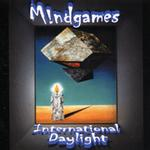

| Artist: | Mindgames |
| Title: | International Daylight |
| Label: | Musea FGBG 4490.AR |
| Length(s): | minutes |
| Year(s) of release: | 2003 |
| Month of review: | [06/2003] |
| 1) | Mental Argue | 5.02 |
| 2) | Factory Of Illness | 11.22 |
| 3) | Signs From The Sky | 7.59 |
| 4) | Beggars Breakfast | 2.35 |
| 5) | An Approach To Mankind | 12.39 |
| 6) | Dreaming The Circus | 9.08 |
| 7) | Selling The Moon | 17.23 |
Factory Of Illness opens with lots of synths, moody in feel. Then some nice percussively played organ sets in. Alternation between guitar and keyboards are up next, quite catchy and satisfying. The band now ups the pace, but continues the strong melodic line. The next part is somewhat reminiscent of Afterglow. The song gets to be more active later on, sometimes a bit too much variation here. However, all the separate parts are appealling enough. This is quite good track. The guitar towards the end is very Howe like.
With Signs From The Sky opens bouncily with Yes style strumming guitars and a bouncy bass line. Then comes a part where percussive piano and a distinctive vocal melody take over. The transitions between the different parts are not always that natural, for instance when we move into a somewhat depressive part, reminiscent of Twin Age. This does not mean I do not like it, but it is easy at times to get the impression of strung together fragments. A somewhat Genesis like friendly piano comes in, and this sunny part is sung in a Genesis like fashion. I try not to pay too much attention to the lyrics, some of the lines are really, unintelligble. The final vocal passage is very nice, with some good organ barging in.
Beggars Breakfast is a short ballad like song, melancholic with acoustic guitar and piano doing the instrumental side, and later a bit of cello. The first lyrics that make sense to me. A good song.
We continue with one of the main epics, An Approach To Mankind. The opening is mainly synths, while after the spoken introduction we also get some powerful chords on guitar. Then the piano plays delicately. The rhtyhm guitar also tags along, and the song tries to become more groovy. The guitar plays a strong role here again. It is not the most prominent instrument though. Time for some more tension building leading up to another dancing chorus, with percussively played keyboards. The vocal parts and the often vague lyrics remind of Yes, but musically the band is closer to neo-prog, with some theatrical elements as well. Around the ten minute mark a wailing solo guitar sets in, and the song takes something of a turn. However after this more poignant vocal part, the funky rhythm guitar returns and we conclude with an extensive up-beat instrumental part.
On Dreaming The Circus we open rather quietly again, but soon the poppiness crops up again with dancing keyboards and rhythm guitars. On this track, some vibraphone is added, during the moodier parts where Pink Floyd is the obvious reference. The middle part features a loud combination of guitar and keyboards, the latter dominating. Then it is back the dancing synths and washes of cymbals. A catchy conclusion in the line of Market Square Heroes, but not on that level.
The final track is Selling The Moon, which is also the longest track on the album by a margin. The guitar sound in the opening is again quite Floydian. The vocals remind more of Kalsbeek formerly of Egdon Heath. Then we get an extensive, somewhat repetitive run on the rhythm guitar, over which the guitar solo's quite nicely. Then it is time for some overly happy keyboards and catch guitar work in the line of the Dutch and English neo-progressive bands. The song is largely in the line of the rest of the album, but does contains a very good intermezzo on piano, followed by a good instrumental passage with tense guitar and all-out keyboards.
Next time, the band ought to have someone take a look at the lyrics, because it is not all English there. All these mistakes give the impression of amateurism and awkwardness, which is hard to counter using music.